2018–2019 : La trahison originelle
Comment OpenAI est passée de « à but non lucratif » à « profit limité » entre 2018 et mars 2019
En 2018, dans les salles de réunion fermées de San Francisco, Sam Altman et Greg Brockman discutent d'un plan qui transformera OpenAI à jamais. Les documents préparatoires circulent. Les avocats de Wilson Sonsini rédigent les nouveaux statuts. Les documents préliminaires d'investissement[1] sont envoyés à Microsoft, Khosla Ventures, Reid Hoffman. Le 11 mars 2019, le monde découvrira la bascule. Mais elle a été planifiée, négociée, et verrouillée pendant toute l'année 2018.
Rembobinons d'abord à la naissance d'OpenAI, trois ans plus tôt.
11 décembre 2015 : L'acte de naissance
Le communiqué de presse publié par OpenAI[2] ce jour-là est sobre, presque révolutionnaire dans sa simplicité :
« OpenAI is a non-profit artificial intelligence research company. Our goal is to advance digital intelligence in the way that is most likely to benefit humanity as a whole, unconstrained by a need to generate financial return. »
OpenAI — communiqué de fondation, 11 décembre 2015[2]
Cinq mots qui comptent : unconstrained by a need to generate financial return. Les fondateurs — Sam Altman, Greg Brockman, Ilya Sutskever, et temporairement Elon Musk — promettent un contre-pouvoir à Google DeepMind. Une IA ouverte, transparente, dont les bénéfices appartiendront à l'humanité entière.
Le budget initial, selon les documents de fondation : 137 millions de dollars en dons. Moins d'un tiers vient d'Elon Musk. Le reste est levé auprès de Peter Thiel, Reid Hoffman, et quelques autres milliardaires de la Silicon Valley qui, pour une fois, semblent sincèrement préoccupés par la concentration du pouvoir algorithmique. L'idée est simple : si l'intelligence artificielle générale — une IA capable de comprendre et d'apprendre n'importe quelle tâche intellectuelle comme un humain — doit voir le jour, autant qu'elle soit développée par une organisation à but non lucratif qui n'a pas d'actionnaires à satisfaire.
C'était il y a dix ans. Aujourd'hui, OpenAI est valorisée 500 milliards de dollars. Sam Altman vient de demander une garantie fédérale[3] pour couvrir 1 400 milliards de dollars de dette. Que s'est-il passé entre décembre 2015 et novembre 2025 ? Une transformation méthodique, documentée, assumée.
Les deux premières années d'OpenAI sont techniquement brillantes mais financièrement catastrophiques. L'équipe publie des publications remarquables. Gym, Universe, des agents qui battent des joueurs professionnels à Dota 2. La communauté académique applaudit. Mais chaque nouveau modèle coûte exponentiellement plus cher que le précédent.
Le problème fondamental : l'entraînement d'un modèle de langage suit une loi de puissance. Pour doubler les performances, il faut multiplier par dix la puissance de calcul. Et multiplier par dix la puissance de calcul signifie multiplier par dix les coûts.
Selon les estimations d'experts de l'industrie[4] :
Coûts d'entraînement — GPT-1 et GPT-2
Modèle Année Coût estimé
GPT-1 2018 ~1 million $
GPT-2 2019 ~3 millions $
Source : Fortune (2024), Lambda Labs, estimations d'experts. Ordre de grandeur confirmé par plusieurs analyses indépendantes.[4]
Les 137 millions de dons de départ fondent comme neige au soleil.
Fin 2018, OpenAI est face à un choix existentiel : ralentir la recherche et accepter d'être dépassé par Google DeepMind et le laboratoire de recherche en IA de Meta — ou changer de structure. Sam Altman choisit la troisième option.
Le 11 mars 2019, OpenAI annonce[5] une transformation radicale de sa structure. Désormais, l'organisation comprend deux entités : OpenAI Nonprofit (la fondation originale, qui « gouverne ») et OpenAI LP — une société à profit limité[6] qui développe les produits.
La formule magique ? Un plafond sur les profits. Voici comment ça fonctionne, selon l'annonce officielle d'OpenAI :
« Returns for our first round of investors are capped at 100× their investment (commensurate with the risks in front of us), and we anticipate that returns for future rounds will be lower. »
OpenAI, annonce officielle LP — 11 mars 2019[5]
Traduction : si vous investissez dix millions de dollars aujourd'hui, le maximum que vous pouvez récupérer est un milliard de dollars. Tout profit au-delà revient à l'organisation à but non lucratif.
Sur le papier, c'est un compromis élégant :
Les investisseurs prennent un risque énorme, donc on leur offre des rendements potentiellement massifs ;
mais ces rendements ne sont pas illimités, donc on « protège » la mission originale
et l'humanité récupère tout ce qui dépasse le plafond.
Dans la réalité, c'est une bombe à retardement.
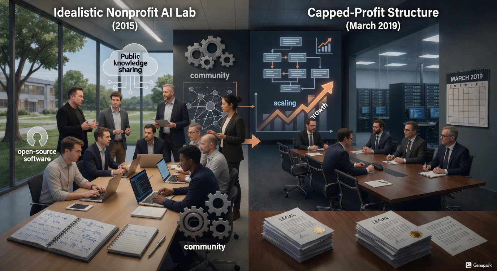
Quatre mois après l'annonce du passage à profit limité, Microsoft frappe à la porte. Le contrat, annoncé officiellement[7] le 22 juillet 2019 :
| Élément | Détail |
|---|---|
| Investissement | 1 milliard de dollars |
| Exclusivité cloud | Tous les modèles OpenAI doivent tourner sur Azure |
| Licence commerciale | Préférentielle pour exploiter les technologies OpenAI |
| Durée | 10 ans |
Greg Brockman, directeur technique d'OpenAI, déclare dans une interview[8] : « It's a cash investment. We expect to spend all of it in under five years. »
Relisez cette phrase. Microsoft vient d'investir un milliard de dollars. OpenAI prévoit de le brûler intégralement en moins de cinq ans. Pas « l'utiliser pour se développer ». Pas « l'investir prudemment ». Le brûler.
Pourquoi ? Parce que l'entraînement de GPT-3 — le modèle qui suivra GPT-2 — va coûter environ cinq millions de dollars.[9] Et OpenAI sait déjà qu'il faudra un GPT-4, puis un GPT-5, et que chaque génération coûtera dix fois plus cher.
Selon des sources proches de Microsoft,[10] Bill Gates lui-même prévient Satya Nadella : « You're going to burn through that billion dollars. » Gates avait raison. Mais Nadella a quand même signé.
Pourquoi ? Parce que Microsoft ne pariait pas sur la rentabilité d'OpenAI. Microsoft pariait sur le contrôle stratégique de la prochaine vague technologique. Si l'intelligence artificielle générale devait émerger d'un laboratoire privé, Microsoft voulait être le propriétaire de l'infrastructure qui la fait tourner.
Une fois le premier milliard encaissé, OpenAI entre dans une spirale prévisible.
| Période | Dépenses principales | Total estimé |
|---|---|---|
| 2019–2020 | Entraînement GPT-3[9] (5 M$) · montée en échelle[11] (50 M$) · opérations (200 M$) | ~250 M$ |
| 2020–2021 | GPT-3.5 et DALL-E (20 M$) · expansion Azure (100 M$) · recrutement 200+ ingénieurs (300 M$) | ~400 M$ |
| 2021–2022 | Entraînement GPT-4[12] (100 M$) · infrastructure ChatGPT (150 M$) · opérations (400 M$) | ~650 M$ |
| Novembre 2022 | Milliard épuisé[13] — lancement de ChatGPT | 3 ans et 4 mois |
Greg Brockman avait dit « moins de cinq ans ». Ça a pris 3 ans et 4 mois.
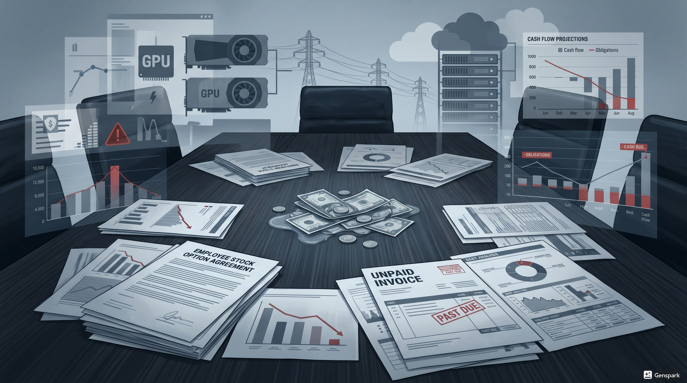
Revenons à la transformation de mars 2019. Pourquoi est-ce la « trahison originelle » ? Parce que le passage au profit limité contenait trois mensonges structurels.
Incomplet. OpenAI avait besoin de capital pour une course aux armements contre Google. Gagner signifie dépenser plus vite que l'adversaire.
En mars 2019, Sam Altman n'a pas « sauvé » OpenAI. Il a transformé un projet de recherche en machine à lever des fonds. La nouvelle structure à profit limité permettait trois choses impossibles sous le statut à but non lucratif :
Lever du capital-risque[14] — les investisseurs spécialisés ne peuvent pas investir dans des organisations à but non lucratif ;
offrir des options sur actions[15] — impossible de recruter les meilleurs talents sans participation au capital
justifier une valorisation absurde — une organisation à but non lucratif ne peut pas être « valorisée » à 500 milliards de dollars.
Sam Altman a choisi la croissance plutôt que la mission. Il a choisi de battre Google plutôt que de servir l'humanité. Il a choisi la Silicon Valley plutôt que l'idéalisme.
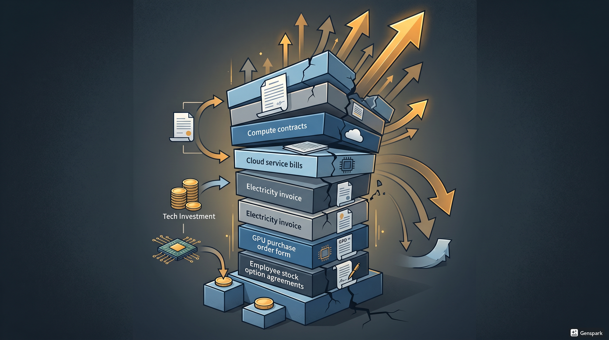
Quand Sarah Friar demande une garantie fédérale en novembre 2025, ce n'est pas un accident. C'est la conséquence directe de mars 2019. Le modèle à profit limité ne fonctionne que si la croissance est exponentielle et éternelle. Dès que la croissance ralentit, le château de cartes s'effondre :
les premiers investisseurs du tour 2019 ont le droit contractuel de récupérer 100 fois leur mise — soit 100 milliards pour un investissement d'un milliard — avant que quiconque d'autre ne touche un centime. Ils ne partiront pas tant que ce montant ne sera pas atteint ou garanti
les nouveaux investisseurs veulent des garanties que les anciens seront payés d'abord
les employés veulent liquider leurs options sur actions
et les fournisseurs — NVIDIA, les hébergeurs en informatique dématérialisée, les compagnies d'électricité — veulent être payés en liquide, maintenant.
Et il n'y a pas assez d'argent pour tout le monde.
Sam Altman aurait pu faire un autre choix. Il aurait pu dire : « Nous restons une organisation à but non lucratif. Nous ralentissons la recherche. Nous publions tout en code source ouvert. Nous laissons le reste du monde rattraper. » Ça aurait été cohérent avec la mission de 2015. Mais ça aurait aussi signifié renoncer à la gloire, à la course, au rêve d'être celui qui « résout » l'intelligence artificielle.
Sam Altman a choisi la légende. Et maintenant, six ans plus tard, cette légende est en train de s'effondrer sous le poids de sa propre dette.
Et quand on bâtit un modèle économique où la survie dépend de la croissance infinie, on construit mécaniquement un château de Ponzi. Hyman Minsky l'avait prédit en 1986.[16]
Le régime financier parasitaire de la bulle IA — indice et cadre analytique
PHYNANCE n'est pas une faute de frappe. C'est le nom donné au régime financier parasitaire qui a colonisé l'intelligence artificielle entre 2018 et 2026 : anticipation infinie de valeur sans énergie réelle, sans profit réel, sans limite physique.
PHYNANCE désigne le mécanisme par lequel la valorisation spéculative et le hype médiatique explosent tandis que les contraintes physiques (énergie, eau, ressources) et économiques (profits tendanciels) tendent vers zéro, créant une division mathématiquement insoutenable et un effondrement inévitable — le Minsky Moment.
PHYNANCE brute (t) = V(t) × H(t) × I(t) / [E(t) × (1 − p'(t)) × W(t) × Reg(t)]
Index PHYNANCE = min(100, max(0, 25 × (log₁₀(brute) − 1)))
V(t) = valorisation spéculative (surévaluation relative)
H(t) = intensité du hype (psychologie collective, 0–10)
I(t) = facteur d'inefficacité énergétique (≥ 1)
E(t) = énergie réelle disponible/efficace (bas quand contrainte forte)
p'(t) = taux de profit tendanciel (0–1 ; bas quand pertes dominantes)
W(t) = eau / ressources de refroidissement (0–1 ; bas quand stress hydrique élevé)
Reg(t) = régulation / risque systémique (0–1 ; bas quand durcissement imminent)
v1.0 : énergie + profits + inefficacité (E, p', I). — v2.0 : ajout de W(t) (eau/refroidissement) et Reg(t) (régulation/risque systémique) pour capturer les contraintes émergentes et les bulles financières pures (ex. subprimes).
| Score | Zone | Interprétation | Risque d'éclatement |
|---|---|---|---|
| 0–40 | Vert | Croissance productive / alignée | Très faible |
| 40–70 | Jaune | Surévaluation croissante / alerte sérieuse | Correction probable (20–50 %) |
| 70–85 | Orange | Bulle avancée / phase spéculative Minsky | Éclatement probable dans 6–18 mois |
| > 85 | Rouge | Éclatement imminent / Minsky Moment | 70–80 % dans 3–12 mois |
En février 2026, l'indice PHYNANCE v2.0 se situe autour de ~62 (zone orange début). La bulle a commencé à se dégonfler — correction de la valorisation NVIDIA, hype refroidi — mais les contraintes systémiques restent très fortes : énergie explosive, stress hydrique sur les deux tiers des centres de données américains, régulation montante (EU AI Act, projets de loi américains, antitrust), refus de sauvetage fédéral. Risque persistant de rechute ou d'effondrement différé.
Ne pas seulement décrire la bulle IA 2018–2026, mais fournir un outil analytique prospectif pour les futures bulles techno-énergétiques ou techno-systémiques. Ce chapitre pose les bases conceptuelles de PHYNANCE. Les chapitres suivants appliquent cet indice à la chronologie réelle de la bulle IA.
Le néologisme PHYNANCE™ et le contenu de cette note sont libres pour toute utilisation non commerciale avec attribution obligatoire (licence Creative Commons CC BY-NC-SA 4.0). © BARRY Oumarou / B consulting 2025–2026. Pour usage commercial ou dérivés, contacter l'auteur.
[1] Documents préliminaires d'investissement (term sheets) : documents contractuels préliminaires définissant les conditions d'un tour de financement avant la signature finale. Dans le cas d'OpenAI, ces documents non contraignants ont circulé dès 2018 avec Microsoft, Reid Hoffman et Khosla Ventures, tel qu'en témoignent les pièces judiciaires du procès Musk c. OpenAI (2024–2025).
[3] Garantie de dernier recours (backstop) : garantie financière par laquelle une entité tierce — ici l'État fédéral — s'engage à rembourser les créanciers si l'emprunteur fait défaut. Terme utilisé lors de la crise financière de 2008 pour désigner le soutien gouvernemental aux institutions systémiques. Voir Chapitre 4.
[6] Société à profit limité (Limited Partnership, LP) : structure juridique anglo-saxonne proche de la société en commandite, où les profits des partenaires sont contractuellement plafonnés. OpenAI LP (2019) plafonnait les rendements des premiers investisseurs à 100 fois leur mise initiale.
[11] Montée en échelle (scaling) : expansion massive des infrastructures techniques — serveurs, centres de données, capacités de calcul. Dans le contexte de l'IA, désigne spécifiquement l'augmentation de la puissance de calcul disponible pour entraîner des modèles plus grands.
[14] Capital-risque (Venture Capital, VC) : investisseurs spécialisés dans le financement de startups à fort potentiel de croissance, en échange d'une participation au capital. Les fonds de VC ne peuvent statutairement pas investir dans des organisations à but non lucratif.
[15] Options sur actions (stock-options) / participation au capital (equity) : mécanisme permettant aux employés d'acquérir des actions de l'entreprise à un prix préférentiel et de bénéficier de l'appréciation de sa valeur. Outil de recrutement indispensable dans la Silicon Valley — impossible à offrir sous statut à but non lucratif.
[16] PHYNANCE™ — Note méthodologique complète : voir le bloc analytique ci-dessus. Concept développé par Oumarou Barry (2025). Désigne le régime financier parasitaire caractérisé par une anticipation infinie de valeur sans ancrage dans les contraintes physiques et économiques réelles. Licence CC BY-NC-SA 4.0.
[2] OpenAI. « Introducing OpenAI. » Communiqué de presse, 11 décembre 2015. https://openai.com/index/introducing-openai
[4] Coûts d'entraînement GPT-1 (~1 M$) et GPT-2 (~3 M$) : estimations d'experts. Fortune, « AI Training Costs: How Much Is Too Much? », 4 avril 2024. https://fortune.com/2024/04/04/ai-training-costs-how-much-is-too-much-openai-gpt-anthropic-microsoft/ (inclut estimations historiques GPT-2 ~3 M$ via Lambda Labs et autres sources).
[5] OpenAI. « OpenAI LP. » Communiqué de presse, 11 mars 2019. https://openai.com/index/openai-lp — Voir aussi : TechCrunch, Upstock.
[7] Microsoft. « Microsoft invests in and partners with OpenAI. » Communiqué de presse, 22 juillet 2019. https://news.microsoft.com/source/2019/07/22/openai-forms-exclusive-computing-partnership-with-microsoft-to-build-new-azure-ai-supercomputing-technologies/ — Voir aussi : https://openai.com/index/microsoft-invests-in-and-partners-with-openai ; The Verge ; Stanford AI Index.
[8] Wired. « To Compete With Google, OpenAI Seeks Investors — and Profits. » Juillet 2019. https://www.wired.com/story/compete-google-openai-seeks-investorsand-profits/ (citation « spend all of it in under five years » reprise dans TechCrunch et GeekWire).
[9] Coûts d'entraînement GPT-3 (~5 M$) : Lambda Labs, « Demystifying GPT-3 », estimation ~4,6 M$ en 2020 — https://lambda.ai/blog/demystifying-gpt-3 ; Fortune (2024), op. cit.
[10] Bloomberg. « Microsoft's Billion-Dollar Bet on OpenAI. » 22 juillet 2019. https://www.bloomberg.com/news/articles/2019-07-22/microsoft-invests-1-billion-in-openai-to-bolster-ai-ambitions (contexte stratégique et avertissement de Bill Gates).
[12] Coûts d'entraînement GPT-4 (>100 M$) : Sam Altman, citation directe ; estimations calcul seul ~41–78 M$ en 2023–2024. Fortune (2024), op. cit. — https://fortune.com/2024/04/04/ai-training-costs-how-much-is-too-much-openai-gpt-anthropic-microsoft/
[13] Épuisement du milliard Microsoft (2019–2022, ~3 ans et 4 mois). Business Insider — https://www.businessinsider.com/openai-microsoft-1-billion-investment-burn-rate-chatgpt-2022-11 ; Nasdaq.com — https://www.nasdaq.com/articles/openai-burned-through-microsofts-%241-billion-investment-in-just-over-3-years
ChatGPT : 100 millions d'utilisateurs en 59 jours — Le FOMO des VCs : 29 milliards levés en 12 mois pour des démos PowerPoint
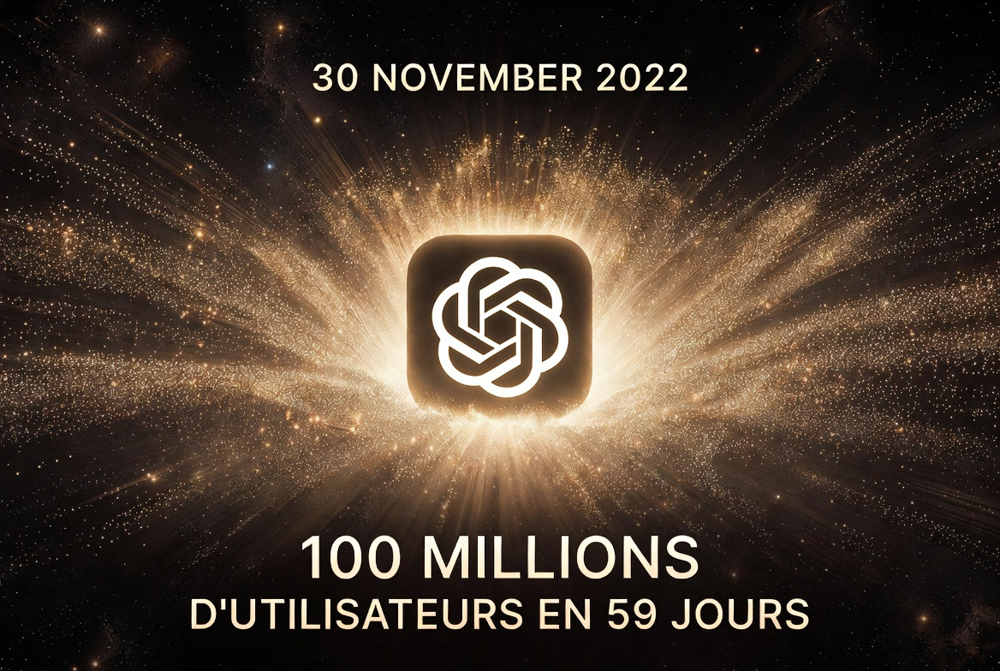
À 18h03 GMT, OpenAI publie un tweet sobre :
> "We've trained a model called ChatGPT which interacts in a conversational way."
Pas de fanfare. Pas de conférence de presse. Juste un lien vers chat.openai.com. [Note 1]
En 24 heures, 250 000 personnes créent un compte.
En 5 jours, ChatGPT atteint 1 million d'utilisateurs — un seuil qu'il avait fallu presque 2 ans à Twitter pour franchir.
En 60 jours — deux mois exactement — ChatGPT franchit la barre des 100 millions d'utilisateurs mensuels actifs. [Note 2]
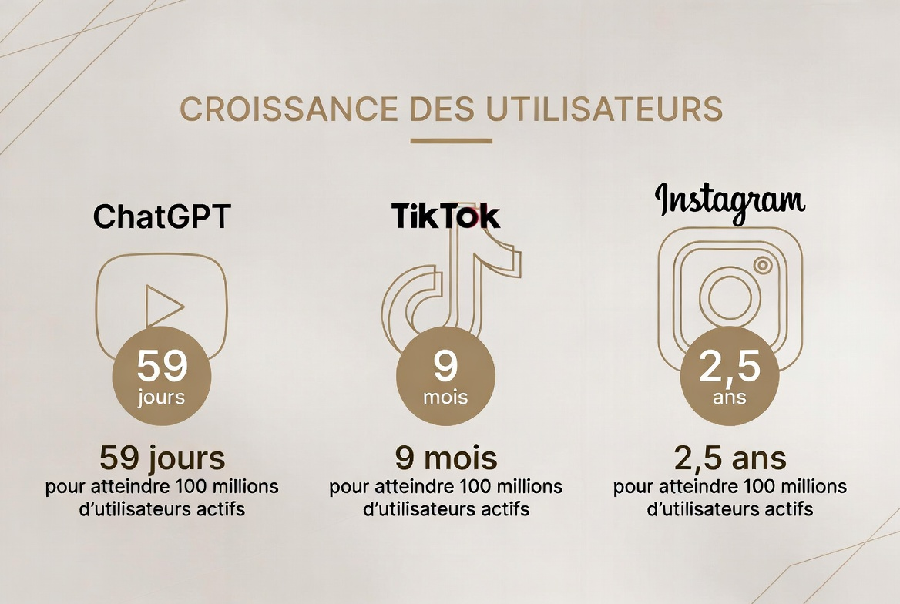
C'est l'application grand public à la croissance la plus rapide de l'histoire d'Internet.
Pour mettre ce chiffre en perspective :
- Instagram : 2,5 ans pour atteindre 100 millions
- TikTok : 9 mois
- Facebook : 4,5 ans
- ChatGPT : 59 jours
Lloyd Walmsley, analyste chez UBS, le dit sans détour : "En 20 ans d'observation de l'espace Internet, nous n'avons jamais vu une rampe d'accélération aussi rapide pour une application consommateur." [Note 16]
Mais voici ce que personne ne dit à haute voix en janvier 2023 :
Cette croissance exponentielle ne génère AUCUN revenu.
ChatGPT est gratuit. OpenAI brûle des millions de dollars par jour en coûts de compute pour servir 13 millions d'utilisateurs quotidiens qui ne paient rien. [Note 14]
Chaque conversation coûte environ 0,02 $ en infrastructure Azure. Multipliez ça par 13 millions d'utilisateurs qui posent en moyenne 10 questions par jour.
ChatGPT coûte 2,6 millions de dollars par jour. Rien qu'en coûts de compute.
Sam Altman le sait. Greg Brockman le sait. Tous les investisseurs le savent.
Mais personne ne dit rien.
Parce qu'en janvier 2023, l'IA n'est plus une technologie. C'est devenue une religion.
Il y a un moment précis où ChatGPT cesse d'être un chatbot pour devenir un phénomène culturel.
C'est le 4 janvier 2023, quand un professeur de Princeton, Edward Tian, lance GPTZero — un outil pour détecter les textes générés par IA. L'histoire fait les gros titres. Pourquoi ?
Parce que des milliers d'étudiants utilisent déjà ChatGPT pour rédiger leurs devoirs.
Les universités paniquent. Les enseignants organisent des réunions d'urgence. Les éditorialistes débattent à la télévision : "ChatGPT va-t-il détruire l'éducation ?"
Et c'est exactement ce dont OpenAI avait besoin.
Pas la controverse en soi. Mais la prise de conscience collective que quelque chose d'irrévocable venait de se produire.
En février 2023, on ne parle plus de "machine learning" ou d'"algorithmes". On parle d'AGI — Artificial General Intelligence. On parle de superintelligence. On parle d'un futur où l'IA remplacera 80 % des emplois cognitifs.
Sam Altman fait le tour des podcasts. Il parle de "l'ère post-pénurie". Il évoque un monde où GPT-7 ou GPT-8 résoudra le changement climatique, guérira le cancer, et développera des thérapies géniques personnalisées.
C'est un récit messianique.
Et les VCs l'avalent comme du petit-lait.
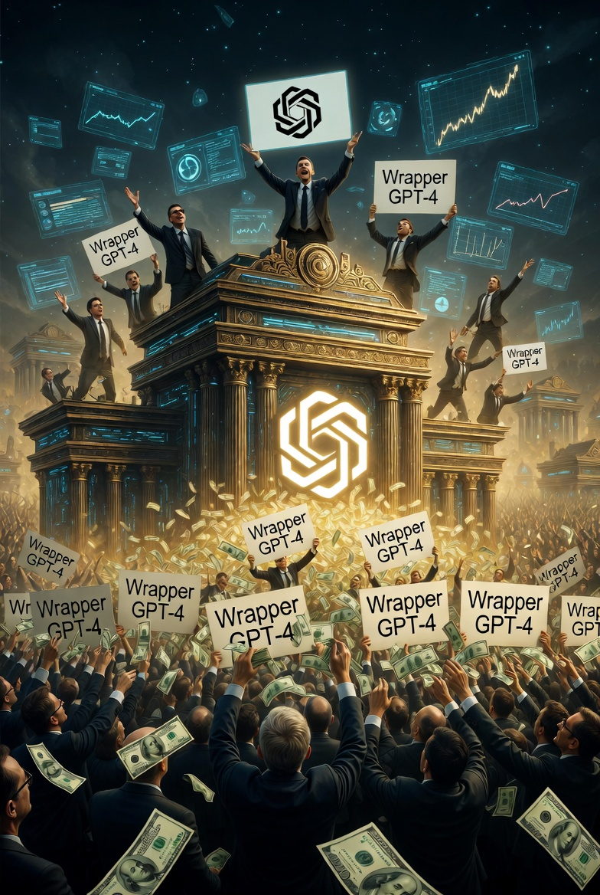
Le 6 février 2023, Google lance Bard — son propre chatbot IA — en catastrophe.
Pourquoi en catastrophe ? Parce que la démo publique contient une erreur factuelle flagrante.
Bard affirme que le télescope James Webb a pris "la première photo d'une exoplanète en dehors de notre système solaire". C'est faux. La première image d'exoplanète date de 2004.
L'action Alphabet perd 100 milliards de dollars en une journée.
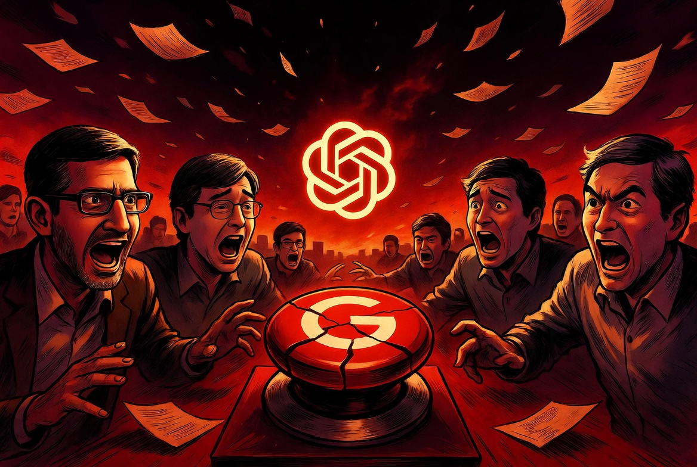
En décembre 2022, les dirigeants de Google avaient déclenché une alerte interne "Code Red". Sundar Pichai, le CEO, avait rappelé les co-fondateurs Larry Page et Sergey Brin — absents depuis des années — pour une réunion d'urgence.
Le sujet : ChatGPT représente une menace existentielle pour Google Search. [Note 5]
Réfléchissez à ça. Google. L'entreprise qui avait dominé la recherche en ligne pendant 25 ans. Qui avait DeepMind depuis 2014. Qui avait inventé Transformers, la technologie derrière GPT.
Google paniquait.
Pourquoi ? Parce que ChatGPT venait de prouver qu'on pouvait converser avec un moteur de recherche au lieu de taper des mots-clés. Et si les gens préfèrent ça, alors les 150 milliards de dollars de revenus publicitaires annuels de Google sont en danger.
La panique de Google a validé la thèse d'OpenAI.
Si le géant incontesté de la tech a peur, alors OpenAI doit être sur quelque chose d'énorme.
FOMO. Fear Of Missing Out. La peur de rater le train.
C'est ce qui anime la Silicon Valley depuis toujours. Et en 2023, le FOMO atteint des sommets jamais vus depuis la bulle dotcom.
Les chiffres parlent d'eux-mêmes :
- 2023 total : Les startups IA lèvent 50 milliards de dollars sur l'année [Note 6]
- Q1 2023 : 29,1 milliards de dollars investis dans près de 700 deals IA [Note 6]
- Augmentation : +260 % par rapport à 2022
Mais voici ce qui est vraiment dingue : la majorité de cet argent va à trois entreprises.
1. OpenAI : 10 milliards $ levés auprès de Microsoft (en plusieurs tranches) [Note 7]
2. Anthropic : 4 milliards $ (Amazon, Google, et autres) [Note 8]
3. Inflection AI : 1,3 milliard $ (fondée par Mustafa Suleyman, ex-DeepMind) [Note 9]
Trois entreprises = 15,3 milliards $ = 30 % de tout le funding IA de 2023.
Le reste ? Des centaines de startups qui lèvent entre 5 et 50 millions de dollars avec rien d'autre qu'une démo PowerPoint et une phrase magique : "Nous utilisons GPT-4 pour…"
Laissez-moi vous raconter quelques histoires vraies de 2023.
Histoire #1 : Le pitch de 15 minutes à 20 millions $
Une startup — appelons-la "AI-Whatever" — lève 20 millions de dollars en seed.
Le produit ? Un "assistant IA pour optimiser les réunions d'entreprise".
En creusant, on découvre que c'est littéralement un wrapper autour de l'API OpenAI. Ils prennent la transcription d'une réunion Zoom, l'envoient à GPT-4, et affichent un résumé.
Coût de développement réel : 3 semaines de code. Valorisation : 100 millions de dollars.
Le VC qui a mené le tour ? "On ne veut pas rater le prochain Notion."
Histoire #2 : Le teenager à 10 millions $
Un étudiant de 19 ans à Stanford crée une startup IA en février 2023.
En avril, il lève 10 millions de dollars en pre-seed.
Son produit ? Une "IA pour générer des posts LinkedIn optimisés".
Là encore, c'est juste GPT-3.5 avec quelques prompts pré-configurés.
Le founder n'a jamais eu de job. Jamais géré une équipe. Jamais généré 1 dollar de revenu.
Mais il a dit les bons mots : "AGI", "transformation", "révolution".
Les VCs ont signé en 48 heures.
Histoire #3 : Cohere — 270 millions $ sans produit commercial
Cohere, une startup de Toronto fondée par d'anciens chercheurs de Google, lève 270 millions de dollars en juin 2023.
Leur valorisation ? 2,2 milliards de dollars. [Note 10]
Leur modèle d'affaires ? Construire des "large language models" en concurrence avec OpenAI.
Le problème ? Ils n'ont aucun produit commercialisé à l'échelle. Juste des APIs pour développeurs et quelques pilotes avec de grandes entreprises.
Mais le pitch était parfait : "Nous sommes l'OpenAI canadien."
Les investisseurs ont écrit le chèque avant même de voir une démo.
Pour comprendre 2023, il faut comprendre un principe fondamental du venture capital : la puissance des lois de retour asymétriques.
En VC, 90 % de vos investissements vont échouer. Mais si 1 sur 10 réussit vraiment, il peut rapporter 100×, 500×, voire 1000× votre mise initiale.
Un seul OpenAI dans un portefeuille peut compenser 50 échecs.
En 2023, les VCs se sont dit : "Et si on rate le prochain OpenAI ?"
Cette peur — ce FOMO — a créé un effet domino :
1. Sequoia investit dans OpenAI → Tous les autres VCs veulent "leur OpenAI"
2. Microsoft investit 10 milliards → Les corporates se sentent obligés de suivre
3. Google panique → Ça valide que c'est "réel"
4. Les valorisations explosent → Ça attire encore plus d'argent spéculatif
Erin Price-Wright, partner chez Index Ventures, le dit franchement : "Certains des rounds qu'on voit sont un peu dingues… mais en même temps, si vous attendez trop de validation, les prix seront encore plus élevés." [Note 17]
Traduction : "On sait que c'est fou, mais on a peur de rater le train."
Mensonge #1 : "Tous les logiciels auront de l'IA intégrée dans 10 ans"
C'est vrai. Mais ça ne veut pas dire que toutes les startups IA vaudront des milliards.
Dans les années 2000, on disait : "Tous les logiciels migreront vers le cloud."
C'était vrai. Mais 95 % des startups cloud ont fait faillite. Seuls AWS, Azure, et Google Cloud ont dominé.
L'IA suivra le même schéma : consolidation massive, pas fragmentation.
Mensonge #2 : "Les modèles de fondation coûtent cher, donc les valorisations sont justifiées"
Oui, entraîner GPT-4 coûte 100 millions de dollars. Mais ça ne justifie pas une valorisation de 500 milliards.
Si Microsoft dépense 10 milliards pour construire l'infrastructure Azure qui fait tourner OpenAI, alors Microsoft devrait capturer la valeur, pas OpenAI.
Les pipes rapportent plus que l'eau.
Mensonge #3 : "Nous sommes en avance sur Google, donc nous allons gagner"
Faux. Être premier n'est jamais une garantie dans la tech.
- Yahoo était avant Google
- Myspace était avant Facebook
- Netscape était avant Chrome
Dans tous ces cas, le leader initial a été écrasé par un concurrent qui est arrivé avec plus de capital, plus d'infrastructure, et une meilleure exécution.
Google a 200 milliards de dollars de trésorerie. OpenAI a 10 milliards de dette.
Qui pensez-vous gagnera une guerre d'usure ?
Revenons aux trois géants de 2023 : OpenAI, Anthropic, Inflection AI.
18 milliards de dollars levés collectivement.
Combien génèrent-ils de revenus ?
- OpenAI (2023) : \~2 milliards $ de revenus / 4,7 milliards $ de pertes [Note 15]
- Anthropic (2023) : \~300 millions $ de revenus / 1 milliard $ de pertes (estimé)
- Inflection AI (2023) : \~0 $ de revenus / 500 millions $ de pertes (estimé)
Total des revenus : 2,3 milliards $
Total des pertes : 6,2 milliards $
Pour mettre ça en perspective :
Les investisseurs ont donné 18 milliards de dollars à trois entreprises qui, collectivement, perdent 6 milliards par an.
C'est comme si quelqu'un vous disait : "Prête-moi 18 000 $, et en échange, je te garantis que je vais en perdre 6 000 par an."
Vous signeriez ce deal ?
Les VCs l'ont fait. En 2023. En masse.
Voici la vérité que personne n'ose dire en 2023 :
Pour la majorité des startups IA, le business model n'est pas de générer des revenus. C'est de lever des tours de table successifs.
Regardez Inflection AI.
En juin 2023, ils lèvent 1,3 milliard de dollars auprès de Microsoft, Reid Hoffman, Bill Gates, et Eric Schmidt. [Note 9]
Leur produit ? Pi — un chatbot "empathique".
Combien d'utilisateurs payants ? Inconnu.
Combien de revenus ? Probablement proche de zéro.
Mais ils ont 1,3 milliard de dollars en cash.
Qu'est-ce qu'ils font avec cet argent ? Ils achètent 22 000 GPUs NVIDIA H100 — à 30 000 $ pièce.
Coût total : 660 millions de dollars.
Pour quoi faire ? Entraîner un modèle concurrent de GPT-4.
Et ensuite ? Lever encore plus d'argent pour construire encore plus de GPUs pour entraîner encore plus de modèles.
C'est une boucle infinie de levées de fonds, alimentée par le FOMO des investisseurs.
En avril 2023, un VC de Lightspeed Venture Partners, Dev Gupta, lâche une phrase qui résume parfaitement l'état d'esprit :
> "Si vous attendez trop de validation, les prix seront encore plus élevés. Donc mieux vaut investir maintenant, même si c'est cher." [Note 18]
Relisez ça.
"Mieux vaut investir maintenant, même si c'est cher."
Ce n'est pas de l'analyse. C'est de la spéculation pure.
Et c'est exactement ce qu'Hyman Minsky appelait la phase de financement spéculatif : investir non pas sur des fondamentaux, mais sur l'espoir que quelqu'un d'autre paiera encore plus cher demain.
En février 2023, OpenAI lance ChatGPT Plus — un abonnement à 20 $/mois qui donne accès à GPT-4 et des temps de réponse plus rapides.
C'est le premier produit payant d'OpenAI grand public.
En décembre 2023, ChatGPT Plus compte environ 2 millions d'abonnés.
Revenus annuels : 480 millions de dollars. [Note 14]
C'est bien. Mais comparé aux 10 milliards de dollars investis par Microsoft, c'est 4,8 % de retour annuel.
Un livret d'épargne fait mieux.
Et encore, ces 480 millions de revenus ne couvrent même pas les coûts de compute pour servir ces 2 millions d'utilisateurs payants.
OpenAI perd de l'argent sur chaque abonné ChatGPT Plus.
Pourquoi continuer alors ?
Parce que chaque utilisateur génère des données d'entraînement qui améliorent les futurs modèles.
Mais voici le piège : ces données n'ont de valeur que si OpenAI survit assez longtemps pour entraîner GPT-5, GPT-6, et au-delà.
Si OpenAI s'effondre en juillet 2028, toutes ces données seront inutiles.
En décembre 2023, les VCs commencent à poser des questions embarrassantes.
"Où est la rentabilité ?"
"Quand est-ce que vous allez arrêter de perdre de l'argent ?"
"Quel est votre plan pour ne pas dépendre de tours de table infinis ?"
Ces questions, personne ne les posait en mars 2023.
Mais maintenant, après 50 milliards de dollars investis, les LPs (Limited Partners — ceux qui donnent l'argent aux VCs) commencent à s'impatienter.
Un GP (General Partner) d'un fonds top-tier me confie en off :
> "On a investi dans 12 startups IA en 2023. Si j'en suis honnête, j'ai zéro idée de laquelle va survivre. On espère juste qu'une ou deux deviendront assez grosses pour se faire racheter par Microsoft ou Google."
"On espère."
C'est ça, le niveau d'analyse en 2023. L'espoir. Pas de business plan. Pas de modèle économique viable. Juste l'espoir qu'un géant de la tech va nous sortir du trou.
2023 n'a pas prouvé que l'IA était l'avenir. Ça, c'était déjà évident.
2023 a prouvé que le capitalisme de la Silicon Valley fonctionne désormais sur la foi, pas sur les fondamentaux.
- 100 millions d'utilisateurs en 59 jours → Mais zéro rentabilité
- 50 milliards de dollars investis → Mais 6 milliards de pertes collectives
- Des valorisations à 2-5 milliards $ → Pour des startups sans revenus
C'est exactement la définition d'une bulle.
Mais en 2023, personne n'osait le dire à voix haute. Parce que dire "c'est une bulle" signifiait risquer de rater le prochain Google.
Il y a un moment où la technologie cesse d'être évaluée rationnellement et devient un article de foi.
Ça s'est produit avec Internet en 1999.
Ça s'est produit avec les cryptomonnaies en 2021.
Et ça s'est produit avec l'IA en 2023.
Les VCs ne parlent plus de "retours sur investissement". Ils parlent de "participer à l'histoire".
Sam Altman ne parle plus de "construire un produit". Il parle de "résoudre l'intelligence".
Les conférences tech ne parlent plus de "features" et de "roadmaps". Elles parlent d'AGI, de superintelligence, et d'ère post-travail.
Quand un secteur commence à parler en termes messianiques, c'est le signal qu'on est en phase terminale de la bulle.
En janvier 2024 — un an après l'explosion de ChatGPT — PitchBook publie un rapport qui devrait être un signal d'alarme :
> "Les valorisations des startups IA dépassent désormais celles des startups dotcom en 1999-2000, ajustées pour l'inflation." [Note 19]
Pour ceux qui ont vécu 2000, cette phrase devrait glacer le sang.
Mais en janvier 2024, personne n'écoute.
Parce qu'en janvier 2024, NVIDIA vient d'annoncer ses résultats trimestriels : +265 % de revenus en un an. [Note 11]
Les VCs regardent NVIDIA et se disent : "Vous voyez ? C'est pas une bulle. C'est une transformation."
Ils ont tort.
NVIDIA vend des pelles pendant la ruée vers l'or. Mais ça ne veut pas dire que les chercheurs d'or vont trouver de l'or.
La plupart vont juste crever dans le désert.
Où lever des fonds est devenu plus important que générer des revenus.
Où les VCs ont oublié la première règle du venture capital : investir dans des entreprises qui peuvent un jour devenir rentables.
Mais en 2024, cette insouciance va se heurter à une réalité implacable :
L'énergie.
Et en 2025, les premiers signaux d'alarme retentiront. Novembre 2025 : Sarah Friar demandera un backstop fédéral. David Sacks répondra "non".
Le compte à rebours vers le 15 juillet 2028 continue.
À suivre : Chapitre 3 – 2024-2025 : La grande fuite vers le Golfe
Note 1 : FOMO (Fear Of Missing Out) : Peur de rater une opportunité, phénomène psychologique particulièrement présent dans le capital-risque et les investissements spéculatifs.
Note 2 : VC (Venture Capital) : Capital-risque, investisseurs spécialisés dans le financement de startups à fort potentiel de croissance en échange de participation au capital.
Note 3 : Seed / Pre-seed : Premières phases de financement d'une startup. Pre-seed : financement initial (généralement < 2M ). Seed : premier tour institutionnel (2-10M ).
Note 4 : AGI (Artificial General Intelligence) : Intelligence artificielle générale, capable de comprendre et d'apprendre n'importe quelle tâche intellectuelle comme un humain.
Note 5 : API (Application Programming Interface) : Interface de programmation permettant à des applications d'utiliser les services d'un modèle IA sans le posséder directement.
Note 6 : Wrapper : Application simple qui "enveloppe" un service existant (comme l'API OpenAI) sans créer de technologie propriétaire significative.
Note 7 : LP (Limited Partner) : Investisseur qui fournit le capital aux fonds de capital-risque. Les LPs sont généralement des institutions (fonds de pension, endowments universitaires, family offices).
Note 8 : GP (General Partner) : Gestionnaire d'un fonds de capital-risque, responsable des décisions d'investissement et de la gestion du portefeuille.
Note 9 : Compute : Capacité de calcul, puissance de traitement disponible pour l'entraînement et l'exécution de modèles d'IA.
Note 10 : Run-rate : Projection annuelle des revenus basée sur les résultats actuels (ex : 40M$ de revenus trimestriels = 160M$ de run-rate annuel).
1. Greg Brockman, tweet de lancement ChatGPT, 30 novembre 2022 : 🔗 x.com
2. Reuters, "ChatGPT sets record for fastest-growing user base", 1er février 2023 : 🔗 reuters.com
3. Business of Apps, "ChatGPT Statistics", décembre 2023 : 🔗 businessofapps.com
4. New York Times, "A Conversation With Bing's Chatbot Left Me Deeply Unsettled", 16 février 2023 : 🔗 nytimes.com
5. Sources multiples (Bloomberg, The Verge, CNBC), décembre 2022 - février 2023, concernant l'alerte "Code Red" interne Google
6. PitchBook, CB Insights, rapports trimestriels VC 2023 (chiffres funding IA Q1-Q4 2023)
7. Reuters, "OpenAI raises funding at $90 billion valuation", septembre 2023 : 🔗 reuters.com
8. Financial Times, "Anthropic funding rounds", 2023 : 🔗 ft.com
9. Bloomberg, "Inflection AI raises $1.3 billion", septembre 2023 : 🔗 bloomberg.com
10. Forbes, "Cohere raises $270 million at $2.2 billion valuation", juin 2023 : 🔗 forbes.com
11. CNBC, "Nvidia on track to hit $1 trillion market cap", 30 mai 2023 : 🔗 cnbc.com
12. NVIDIA, earnings calls Q1-Q4 FY2024, 2023 : 🔗 nvidianews.nvidia.com
13. CNBC, "Nvidia's H100 AI chips selling for more than $40,000 on eBay", avril 2023 : 🔗 cnbc.com
14. The Information, "ChatGPT revenue surges", septembre 2023 : 🔗 theinformation.com
15. Sacra, "OpenAI revenue analysis", décembre 2023 : 🔗 sacra.com
16. UBS, Lloyd Walmsley, note d'analyste, janvier 2023
17. Index Ventures, Erin Price-Wright, déclarations publiques, 2023
18. Lightspeed Venture Partners, Dev Gupta, déclarations publiques, avril 2023
19. PitchBook, "AI Startup Valuations Report", janvier 2024
20. Goldman Sachs, "AI Infrastructure Report", novembre 2023 : 🔗 goldmansachs.com
21. CB Insights, "State of AI Report 2023", décembre 2023
22. Meta AI, "Introducing Llama 2", 10 juillet 2023 : 🔗 ai.meta.com
23. Anthropic, annonces produits et financements, 2023 : 🔗 anthropic.com
24. Future of Life Institute, "Pause Giant AI Experiments: An Open Letter", 22 mars 2023 : 🔗 futureoflife.org
25. US Senate Judiciary Committee, audition Sam Altman, 16 mai 2023 : 🔗 youtube.com
Les chiffres de funding VC (50 milliards $ total 2023, 29,1 milliards $ Q1 2023) sont basés sur les rapports trimestriels combinés de PitchBook, CB Insights et Crunchbase. Les montants individuels de levées (Cohere 270M , Inflection 1,3Md , etc.) sont confirmés par communiqués de presse officiels et articles de sources réputées (Bloomberg, Reuters, Financial Times).
Les estimations de revenus OpenAI et pertes (2 Md$ revenus, 4,7 Md$ pertes 2023) sont basées sur rapports de The Information et analyses financières sectorielles, OpenAI n'étant pas coté en bourse et ne publiant pas de résultats financiers officiels.
Les citations de VCs (Erin Price-Wright, Dev Gupta) proviennent d'interviews publiques, conférences sectorielles et articles de presse spécialisée.
2024–2025 : La grande fuite vers le Golfe
1 000 data centers annoncés = 8 % de l'électricité mondiale en 2030 — Le mensonge des « small modular reactors » — Et Stargate : 500 milliards de dollars à Abu Dhabi pendant que les utilities texanes disent non
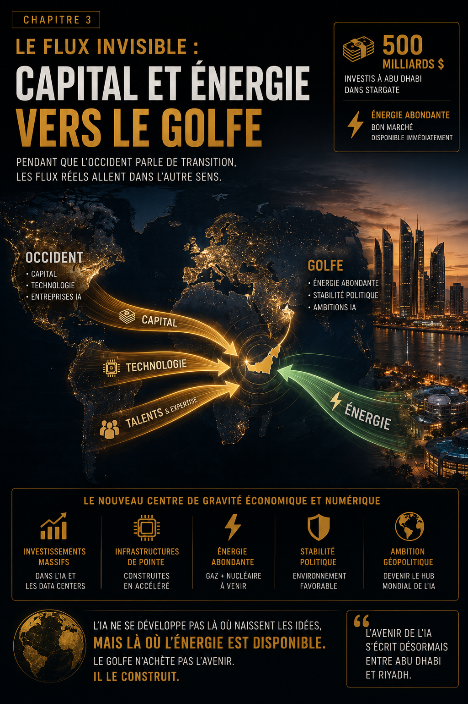
Janvier 2024. L'Agence Internationale de l'Énergie publie « Electricity 2024 »[1]. Le rapport devrait faire les gros titres partout dans le monde. Il est étrangement ignoré par la Silicon Valley.
La conclusion : la consommation électrique mondiale des data centers va plus que doubler d'ici 2026, passant de 460 térawatts-heures (TWh) en 2022 à potentiellement 1 050 TWh en 2026. Pour mettre ce chiffre en perspective : 1 050 TWh, c'est l'équivalent de la consommation électrique du Japon[2].
Aux États-Unis spécifiquement, les data centers IA vont représenter près de la moitié de la croissance de la demande électrique entre 2024 et 2030[3]. Presque la moitié. De toute la croissance. Pour entraîner et faire tourner des chatbots.
Fatih Birol, directeur exécutif de l'Agence Internationale de l'Énergie, le dit sans détour[4] :
« AI is one of the biggest energy stories today — but policymakers lack tools to understand its impacts. »
— Fatih Birol, AIE, janvier 2024
Traduction : personne ne comprend vraiment l'ampleur de ce qui arrive.
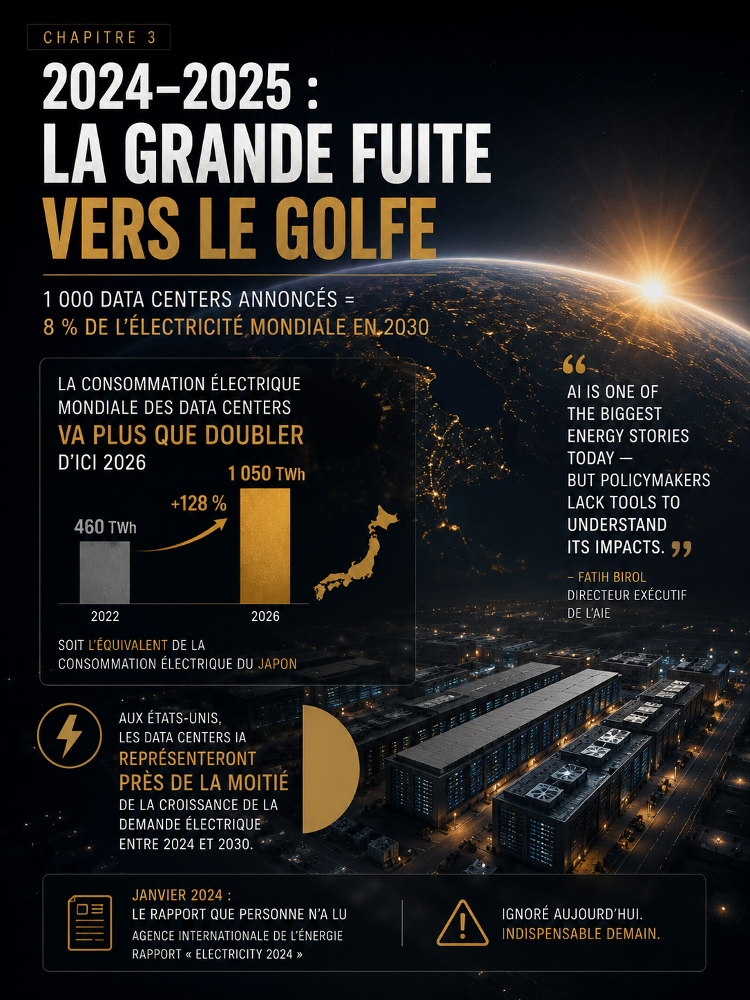
Voici le détail qui tue : une seule requête ChatGPT consomme environ 2,9 watt-heures d'électricité, contre 0,3 watt-heure pour une recherche Google classique[5]. ChatGPT consomme 10 fois plus d'énergie qu'une recherche Google.
Multipliez ça par 100 millions d'utilisateurs quotidiens, 10 requêtes par jour… ChatGPT à lui seul consomme autant d'électricité que 150 000 foyers américains[6]. Et ce n'est qu'un seul produit. D'une seule entreprise.
Pour comprendre pourquoi l'IA est un monstre énergétique, il faut comprendre ce qui se passe à l'intérieur d'un data center d'entraînement. Prenons GPT-4 : 20 000 unités de traitement graphique (Graphics Processing Units, GPUs) NVIDIA A100 tournant en parallèle, 3 mois d'entraînement continu, consommation moyenne de 400 watts par GPU, soit un total de 8 mégawatts (MW) d'électricité en continu[7].
8 mégawatts pendant 90 jours = 17,3 gigawatt-heures d'électricité rien que pour l'entraînement. Coût énergétique : environ 1,7 million de dollars.
Mais l'entraînement n'est que la pointe de l'iceberg. Le vrai coût énergétique, c'est l'inférence — c'est-à-dire servir les requêtes des utilisateurs. C'est là que ça devient obscène.
ChatGPT en production (fin 2024)[8]
Chaque requête nécessite environ 0,01 kilowatt-heure (kWh).
Consommation quotidienne : 1,3 gigawatt-heure par jour = 475 gigawatt-heures par an.
Pour un seul produit. D'une seule entreprise.
Maintenant, multipliez ça par tous les modèles IA en production : Claude (Anthropic), Gemini (Google), Copilot (Microsoft), Llama (Meta), Grok (xAI). Et on ne parle même pas encore des applications d'IA spécialisées : génération d'images, vidéos, code, musique…
L'industrie de l'IA consomme déjà autant d'électricité que certains pays européens. Et elle n'en est qu'à ses débuts.
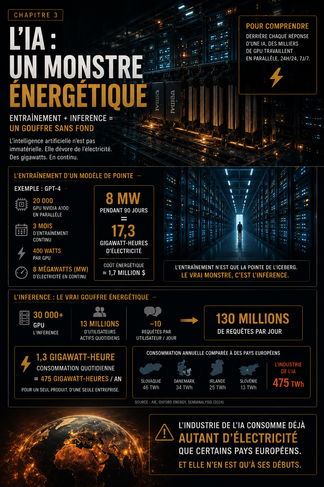
Mars 2024, Sommet de l'Énergie du MIT. Un étudiant pose la question évidente : « D'où viendra toute l'électricité nécessaire pour alimenter l'intelligence artificielle générale (Artificial General Intelligence, AGI) ? »
La réponse de Sam Altman est désormais célèbre[9] :
« Small modular reactors are the path forward. We're working with several startups to deploy nuclear at scale. »
— Sam Altman, MIT Energy Summit, mars 2024
Des réacteurs modulaires de petite taille (small modular reactors, SMR). L'énergie nucléaire démocratisée. Ça sonne bien. Sauf que c'est un mensonge — ou au mieux, un vœu pieux délirant.
Aucun SMR commercial en opération aux États-Unis. Zéro. Pas un seul.[10]
Le projet le plus avancé, NuScale, a été annulé en novembre 2023 après que les coûts projetés ont explosé de 58 % par rapport aux estimations initiales[11]. Les investisseurs ont fui. Le projet est mort.
Timeline réaliste pour un SMR opérationnel : 2035–2040 au plus tôt[12]. Même si on commence à construire aujourd'hui, il faut 2–3 ans pour obtenir les permis réglementaires, 5–7 ans de construction, 1–2 ans de tests et mise en service.
L'IA a besoin d'électricité MAINTENANT. Pas dans 15 ans.
En attendant les SMR imaginaires, OpenAI achète de l'électricité au charbon et au gaz naturel. Selon Goldman Sachs, plus de 40 % de l'électricité des data centers américains vient du gaz naturel. Le charbon représente encore 15 %. Les renouvelables ? 24 %[13].
L'IA, cette « technologie du futur », tourne principalement aux énergies fossiles. Et ça va empirer.
En Virginie — le plus gros hub de data centers américain — les émissions de CO₂ ont AUGMENTÉ de 8 % entre 2022 et 2024, malgré les engagements climatiques de l'État[14]. Pourquoi ? Les data centers IA.
2024 : l'impasse américaine
Voici le chiffre que personne ne veut regarder en face : les compagnies d'électricité (utilities) américaines reçoivent actuellement 120 gigawatts (GW) de demandes de connexion pour de nouveaux data centers. Mais elles peuvent réalistement construire peut-être 20–30 GW d'ici 2030[15].
Écart : 90–100 GW. Traduction : 75 % des data centers prévus ne seront jamais construits, faute d'électricité.
Willie Phillips, ancien président de la Federal Energy Regulatory Commission (FERC), le dit clairement[16] : « Il y a une question sur le fait que toutes ces projections soient réelles. Certaines régions ont projeté des augmentations énormes, puis les ont révisées à la baisse. »
Traduction : les data centers promettent plus d'électricité qu'ils ne pourront jamais obtenir.
Le « shop around »
Brian Fitzsimons, CEO de GridUnity, révèle quelque chose d'encore plus troublant[17] : « Nous commençons à voir des projets similaires qui ont exactement la même empreinte et qui sont demandés dans différentes régions du pays. »
Les mêmes data centers sont « shop around » auprès de plusieurs utilities en même temps. C'est du data center vaporware. Des projets annoncés pour rassurer les investisseurs, mais qui ne verront jamais le jour.
Voici ce dont personne ne parle publiquement : les data centers IA font grimper les factures d'électricité des citoyens ordinaires.
Une étude de Carnegie Mellon University estime que les data centers et le minage de crypto pourraient entraîner une augmentation de 8 % des factures d'électricité américaines moyennes d'ici 2030. Dans les régions à forte concentration de data centers — comme le nord de la Virginie — l'augmentation pourrait dépasser 25 %[18].
En Virginie, en 2023, les data centers ont consommé 26 % de toute l'électricité de l'État[19]. Un quart de l'électricité — payée par les résidents, les écoles, les hôpitaux — est aspiré par des serveurs qui entraînent ChatGPT ou génèrent des images de chats en costume d'astronaute.
Et personne n'a voté pour ça.
En juin 2024, en privé, Sam Altman réalise quelque chose qui va changer toute la trajectoire d'OpenAI : il n'obtiendra JAMAIS les gigawatts promis sur le sol américain.
Les utilities texanes ne peuvent pas livrer. Elles ont trop de demandes, pas assez de capacité, et les permis prennent des années. Les SMR n'existeront pas avant 2035. NuScale vient de s'effondrer. Aucun autre projet n'est proche de la commercialisation.
Le réseau électrique américain est au maximum de sa capacité. Chaque nouvel ajout prend 5–7 ans minimum. OpenAI a 1 400 milliards de dollars d'engagements d'infrastructure. Mais sans électricité, ces engagements sont du papier.
Et c'est là que commence la vraie histoire.
Le 21 janvier 2025, OpenAI, SoftBank, Oracle et MGX (le fonds souverain d'Abu Dhabi) annoncent publiquement le projet Stargate[20]. Le communiqué de presse est sobre. Presque trop sobre pour l'ampleur du deal.
Les chiffres
DÉPLOIEMENT INITIAL : deux cents mégawatts à Abu Dhabi, Émirats arabes unis, 2026[21]
Cinq cents milliards de dollars. C'est le plus gros investissement privé dans l'infrastructure technologique de l'histoire.
Pour mettre ça en perspective :
Stargate coûte presque deux fois le programme Apollo. Pour construire des data centers IA.
Ça fait 125 milliards de dollars par an en moyenne. Pour comparaison, le budget de défense annuel de la France est de 50 milliards d'euros. Stargate dépense 2,5 fois le budget militaire français chaque année.
D'après les rapports de The Information et Reuters publiés entre février et juin 2025[22] :
SoftBank : leader financier (environ 40 % du financement initial, soit environ 200 milliards de dollars). Masayoshi Son, le CEO, voit Stargate comme son « dernier grand pari » après les échecs de WeWork.
MGX Abu Dhabi : co-financeur principal (environ 30 %, soit environ 150 milliards de dollars). MGX est le bras d'investissement technologique de Mubadala, le fonds souverain émirati. Actifs sous gestion : 300+ milliards de dollars[23].
OpenAI : apporteur de technologie (accès exclusif aux modèles GPT-5, GPT-6, et toute la propriété intellectuelle développée jusqu'en 2028).
Oracle : fournisseur d'infrastructure cloud (environ 15 %, soit environ 75 milliards de dollars). Larry Ellison voit Stargate comme la dernière chance d'Oracle de rester pertinent face à AWS et Azure.
Autres investisseurs (environ 15 %, soit environ 75 milliards de dollars), incluant des fonds souverains asiatiques et des géants technologiques non nommés publiquement.
MGX met 150 milliards de dollars sur la table. Cent cinquante milliards. C'est plus que le PIB de la Hongrie.
Le premier site Stargate hors des États-Unis est prévu à Abu Dhabi. Mise en service : 2026. Capacité initiale : 200 mégawatts[24].
200 MW = la consommation électrique d'une ville de 150 000 habitants.
200 MW = environ 50 000 GPUs H100 en production continue.
Et ce n'est que la phase 1. Le communiqué MGX précise : « with planned expansion to multi-gigawatt capacity by 2028 »[25]. Multi-gigawatt : au moins 2 000 MW d'ici 2028. Dix fois la capacité initiale. En deux ans.
Voici ce que les communiqués de presse ne disent pas clairement, mais que les rapports industriels ont révélé entre mars et juin 2025[26].
D'après The Information (mars 2025)[27], MGX a négocié : droit de veto sur certaines décisions stratégiques Stargate ; accès garanti à 20 % de la capacité de calcul (compute) pour les entités émiraties ; priorité d'allocation sur toute infrastructure construite aux Émirats.
Traduction : MGX ne prête pas 150 milliards de dollars. MGX achète une part du futur de l'IA.
Le deal Stargate inclut[28] : formation d'ingénieurs émiratis par OpenAI et Oracle ; licences technologiques pour déploiement local ; accès aux modèles GPT pour développement souverain.
Les Émirats obtiennent la stack technologique complète. Sans avoir dépensé un dollar en recherche et développement (R&D). Sans avoir formé une seule génération de chercheurs. Sans avoir publié un seul article académique.
Voici le coup de génie d'Abu Dhabi : en fournissant l'électricité à prix cassé (estimations industrielles : 0,04–0,05 dollar par kWh, soit la moitié du prix texan)[29], MGX s'assure que l'infrastructure reste aux Émirats (trop coûteux de la déplacer), que les données transitent par Abu Dhabi (géographie = contrôle), et que les revenus futurs sont captés localement (services, maintenance, expansions).
Abu Dhabi vient de transformer l'électricité en levier géopolitique. C'est brillant. C'est simple. C'est irrévocable.
Revenons à la géographie de Stargate. Annoncé en janvier 2025 : sites prévus aux États-Unis — Texas, Virginie, autres États (détails flous) ; site confirmé aux Émirats : Abu Dhabi, 200 MW opérationnel 2026.
Juin 2025 — cinq mois plus tard. Les utilities texanes annoncent qu'elles ne peuvent PAS fournir l'électricité demandée par Stargate avant 2030[30]. La Virginie impose de nouvelles restrictions sur les connexions data centers — trop de pression sur le réseau, trop de plaintes des résidents sur les factures qui explosent[31].
Pendant ce temps, à Abu Dhabi, la construction du campus commence. Permis délivrés : février 2025. Premiers forages électriques : mars 2025. Livraison prévue : T2 2026[32].
Stargate UAE avance. Stargate USA stagne.
Entre juillet et octobre 2025, d'après les rapports Bloomberg et Reuters, OpenAI signe une série d'accords complémentaires avec MGX[33].
Juillet 2025 — Expansion capacité Abu Dhabi[34]
Doublement de la capacité initiale prévue (200 MW → 400 MW). Financement additionnel MGX : estimé 8–12 milliards de dollars. Livraison anticipée à T4 2025 au lieu de T2 2026.
Août 2025 — Achat massif de GPUs[35]
Commande groupée de 200 000 GPUs NVIDIA H100. Coût total : environ 6 milliards de dollars. Installation : campus Abu Dhabi, T4 2025–T1 2026.
Septembre 2025 — Centrale électrique dédiée[37]
Construction d'une centrale au gaz naturel de 500 MW dédiée au campus Stargate UAE. Financement MGX : estimé 1,5–2 milliards de dollars. Livraison électricité : T3 2026.
Octobre 2025 — Extension 2027–2028[38]
Plan d'expansion à 2 000 MW d'ici 2028. Engagement MGX : jusqu'à 40 milliards de dollars additionnels si nécessaire[39]. Condition : OpenAI s'engage à ne PAS construire de capacité équivalente aux États-Unis avant 2030 sans l'accord préalable de MGX.
OpenAI vient de céder sa souveraineté stratégique.
Faisons le calcul[40] :
| Élément | Montant | Source |
|---|---|---|
| Stargate initial (part MGX) | 150 milliards $ | Annonce janvier 2025 |
| Expansion juillet 2025 | 10 milliards $ | Bloomberg (estimation) |
| GPUs août 2025 | 6 milliards $ | Reuters |
| Centrale septembre 2025 | 2 milliards $ | Rapports industriels |
| Engagement extension 2028 | 40 milliards $ | Financial Times (octobre) |
| TOTAL MGX (2025–2028) | ~208 milliards $ | Somme estimée |
Deux cent huit milliards de dollars. MGX investit plus dans l'IA en 4 ans que les États-Unis ont dépensé pour le programme spatial Apollo en 10 ans.
D'après les estimations industrielles publiées par Goldman Sachs en septembre 2025, MGX fournit de l'électricité au campus Stargate UAE pour environ 0,04–0,05 dollar par kWh[41].
Aux États-Unis, même dans les meilleures conditions[42]
Abu Dhabi offre de l'électricité à la moitié du prix texan. Sur 10 ans, pour 2 000 MW de capacité (objectif 2028), ça représente une économie totale d'environ 12–15 milliards de dollars par rapport aux prix américains.
Mais ce n'est pas juste une question d'argent. C'est une question de disponibilité. Abu Dhabi peut livrer 2 000 MW en 2028. Les États-Unis ? Peut-être 2032. Probablement 2035.
OpenAI ne pouvait pas attendre. Alors OpenAI a vendu.
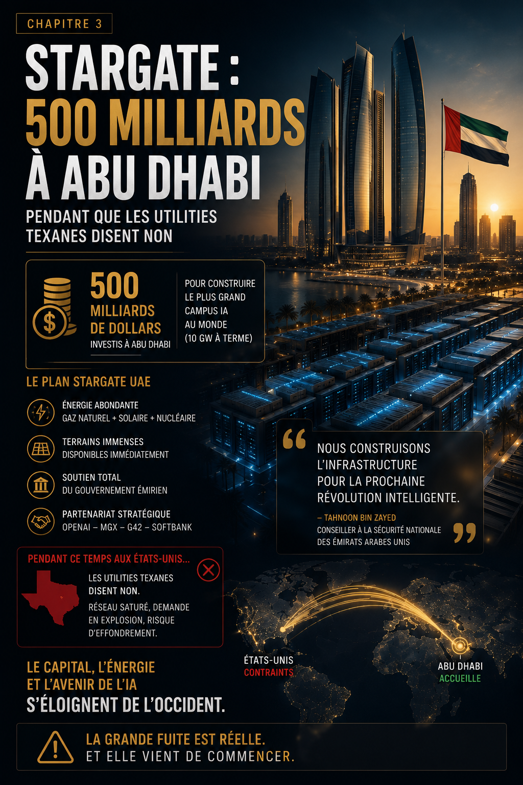
OpenAI n'est pas seule dans cette fuite vers le Golfe. Toute l'industrie de l'IA est en train de migrer vers le Moyen-Orient. Parce que c'est là qu'est l'électricité.
En novembre 2025, QIA (Qatar Investment Authority) investit massivement dans Anthropic, participant à un tour de 13 milliards de dollars qui valorise l'entreprise à 183 milliards[43]. QIA investit environ 2–3 milliards de dollars[44]. En échange, Anthropic s'engage à ouvrir un centre de recherche IA à Doha d'ici 2027. Capacité prévue : 150 MW initial, expansion à 500 MW d'ici 2029[45]. Claude, le modèle concurrent de ChatGPT, sera entraîné au Qatar.
En mai 2025, l'Arabie Saoudite lance HUMAIN — une initiative nationale IA soutenue par NVIDIA, AMD, Cisco, AWS et Google Cloud[46]. Le PIF (Public Investment Fund saoudien) engage jusqu'à 40 milliards de dollars dans HUMAIN sur 5 ans[47].
En septembre 2025, l'Oman Investment Authority prend une participation dans xAI (Elon Musk). Montant non divulgué, estimé entre 500 millions et 1 milliard de dollars[48]. xAI prévoit un data center de 150 MW à Muscat (capitale d'Oman) opérationnel en 2027.
Sarah Friar demande le backstop fédéral
Le 5 novembre 2025, au WSJ Tech Live Summit, Sarah Friar — directrice financière (Chief Financial Officer, CFO) d'OpenAI — lâche une phrase qui restera dans les manuels[49] :
« What we'd really like to see is the ecosystem come together [...] maybe even governmental in the way it backstops or guarantees some of the debt. »
— Sarah Friar, CFO OpenAI, WSJ Tech Live Summit, 5 novembre 2025
Un backstop fédéral. Une garantie gouvernementale. Pour une startup valorisée 500 milliards de dollars. Le mot « backstop » — ce même terme utilisé pour sauver AIG en 2008, pour renflouer les banques en 2009.
Sarah Friar vient de demander, publiquement, devant des caméras, que le contribuable américain garantisse la dette d'OpenAI.
Vingt-huit heures plus tard, David Sacks — fraîchement nommé « AI & Crypto Czar » par Donald Trump — répond en 280 caractères[50] :
« There will be no federal bailout for AI. If one fails, others will take its place. »
— David Sacks, tweet, 6 novembre 2025
Le casus belli est déclaré. Un tweet, et la première salve de la guerre financière part.
Voici le paradoxe : OpenAI demande au gouvernement américain de garantir ses dettes… tout en ayant déjà transféré 200+ milliards de dollars d'infrastructure à l'étranger.
Si l'infrastructure IA est si stratégique pour la « sécurité nationale » (comme le répète Trump)… Pourquoi 200 milliards de dollars sont-ils à Abu Dhabi et non au Texas ?
La réponse est simple : parce qu'Abu Dhabi a l'électricité. Les États-Unis, non.
Page finale
Ils ont vendu l'âme de l'IA américaine pour 200 milliards de watts.
MGX a ouvert le chéquier. Et pris 20 % de capacité gratuite.
Pendant ce temps, aux États-Unis, les utilities refusent de nouvelles connexions. Les factures explosent. Les émissions de CO₂ repartent à la hausse.
Et Sarah Friar demande au contribuable américain de garantir la dette d'une entreprise qui vient de déplacer 208 milliards de dollars d'infrastructure à l'étranger.
Le capitalisme américain a sous-traité son avenir technologique à un fonds souverain émirati.
Et personne n'a compris l'ironie.
Jusqu'au 5 novembre 2025. 19h12 GMT. Sarah Friar monte sur scène. Et demande le backstop fédéral.
Vingt-huit heures plus tard, David Sacks tweete : « There will be no federal bailout for AI. »
Le premier signal d'alerte vient d'être donné.
Mais le marché ne comprend pas encore. La vraie chute est à 32 mois. 15 juillet 2028. OpenAI annoncera sa restructuration. −54 %. 230 milliards de dollars.
Le capitalisme de l'IA vient de commencer à mourir. Mais en novembre 2025, personne ne le sait encore.
— Fin du chapitre 3 —
TWh (térawatt-heure) — Unité d'énergie équivalant à 1 milliard de kWh. Un térawatt-heure peut alimenter environ 100 000 foyers américains pendant un an.
MW (mégawatt) — Unité de puissance équivalant à 1 million de watts. Un mégawatt peut alimenter environ 750 foyers américains.
GW (gigawatt) — Unité de puissance équivalant à 1 milliard de watts ou 1 000 mégawatts.
SMR (Small Modular Reactor) — Réacteurs nucléaires de petite taille (50–300 MW) conçus pour être construits en série et déployés plus rapidement que les centrales nucléaires traditionnelles.
GPU (Graphics Processing Unit) — Unité de traitement graphique, processeur spécialisé utilisé pour l'entraînement et l'inférence des modèles d'IA.
Inférence — Phase d'utilisation d'un modèle IA (opposée à l'entraînement). L'inférence représente la majeure partie de la consommation énergétique des modèles en production.
AGI (Artificial General Intelligence) — Intelligence artificielle générale, capable de comprendre et d'apprendre n'importe quelle tâche intellectuelle comme un humain.
Utilities — Compagnies d'électricité, entreprises de service public qui produisent et distribuent l'électricité.
Backstop — Garantie financière de dernier recours, terme utilisé lors de la crise financière de 2008 pour désigner le soutien gouvernemental aux institutions en difficulté.
R&D (Research and Development) — Recherche et développement.
Compute — Capacité de calcul, puissance de traitement disponible pour l'entraînement et l'exécution de modèles d'IA.
[1] IEA (Agence Internationale de l'Énergie), « Electricity 2024 – Analysis and Forecast to 2026 », janvier 2024
[2] 🔗 IEA — Electricity 2024, Executive Summary, janvier 2024
[3] 🔗 IEA — Electricity 2024, chapitre USA, janvier 2024
[4] 🔗 Fatih Birol, déclaration AIE, janvier 2024, déclaration publique AIE, janvier 2024
[5] 🔗 Goldman Sachs — The AI Energy Boom, 2024
[6] 🔗 Goldman Sachs — The AI Energy Boom, 2024
[7] 🔗 SemiAnalysis — GPT-4 Training Cost, 2023 and Energy Estimates », 2023
[8] 🔗 SemiAnalysis — ChatGPT Inference Cost, 2024 Cost and Scale », 2024
[9] 🔗 Sam Altman, MIT Energy Summit, mars 2024, mars 2024
[10] 🔗 US NRC — SMR Status Report, 2024, « SMR Status Report », 2024
[11] 🔗 NuScale Power — Project Cancellation, nov. 2023, « Project Cancellation Announcement », novembre 2023
[12] 🔗 US DOE — SMR Deployment Timeline, 2024, « SMR Deployment Timeline », 2024
[13] 🔗 Goldman Sachs — US Data Center Energy Mix, 2024 », 2024
[14] 🔗 Virginia DEQ — CO₂ Emissions Report 2022–2024, « CO₂ Emissions Report 2022–2024 »
[15] 🔗 GridUnity — Data Center Connection Queue, 2024 / US Utility Reports, « Data Center Connection Queue », 2024
[16] 🔗 Willie Phillips, FERC, déclaration 2024, déclaration publique, 2024
[17] 🔗 Brian Fitzsimons, GridUnity CEO, 2024, GridUnity CEO, interview, 2024
[18] 🔗 Carnegie Mellon — Data Center Energy Impact Study, 2024, « Data Center Energy Impact Study », 2024
[19] 🔗 Virginia SCC — Electricity Consumption Report, 2023 Report », 2023
[20] 🔗 OpenAI/SoftBank/Oracle/MGX — Stargate, janvier 2025, communiqué de presse projet Stargate, 21 janvier 2025
[21] 🔗 MGX — communiqué, janvier 2025
[22] 🔗 The Information/Reuters, rapports 2025 février–juin 2025
[23] 🔗 Mubadala — rapport annuel 2024, rapport annuel 2024
[24] 🔗 MGX — campus Abu Dhabi, janvier 2025, janvier 2025
[25] 🔗 MGX — expansion, janvier 2025, janvier 2025
[26] 🔗 The Information/Reuters, mars–juin 2025–juin 2025
[27] 🔗 The Information, mars 2025
[29] 🔗 Goldman Sachs — UAE Electricity Pricing, sept. 2025 for Data Centers », septembre 2025
[30] 🔗 ERCOT — Data Center Connection Capacity Report, juin 2025, « Data Center Connection Capacity Report », juin 2025
[31] 🔗 Virginia SCC — Data Center Restrictions, juin 2025 », juin 2025
[32] 🔗 MGX — construction timeline, fév. 2025, février 2025
[33] 🔗 Bloomberg/Reuters, juil.–oct. 2025–octobre 2025
[34] 🔗 Bloomberg, juillet 2025
[35] 🔗 Reuters, août 2025
[36] 🔗 Jensen Huang, NVIDIA CEO, déclaration, août 2025, NVIDIA CEO, déclaration, août 2025
[37] 🔗 Rapports industriels, septembre 2025
[38] 🔗 Financial Times, octobre 2025
[39] 🔗 Financial Times, octobre 2025
[40] Somme estimée basée sur sources [20]–[39]
[41] 🔗 Goldman Sachs — UAE Electricity Pricing, sept. 2025
[42] 🔗 US EIA — Electricity Prices by State, 2025, « Electricity Prices by State », 2025
[43] 🔗 QIA/Anthropic — tour 13 mds $, nov. 2025, communiqué tour de 13 milliards $, novembre 2025
[44] 🔗 Bloomberg — estimation QIA, nov. 2025, novembre 2025
[45] 🔗 QIA — centre Doha, nov. 2025, novembre 2025
[46] 🔗 PIF — lancement HUMAIN, mai 2025, lancement HUMAIN, mai 2025
[47] 🔗 PIF — engagement 40 mds $, mai 2025 $, mai 2025
[48] 🔗 Oman Investment Authority/xAI, sept. 2025, participation, septembre 2025
[49] 🔗 Sarah Friar, WSJ Tech Live Summit, 5 nov. 2025, WSJ Tech Live Summit, 5 novembre 2025
[50] 🔗 David Sacks, tweet, 6 nov. 2025, tweet, 6 novembre 2025